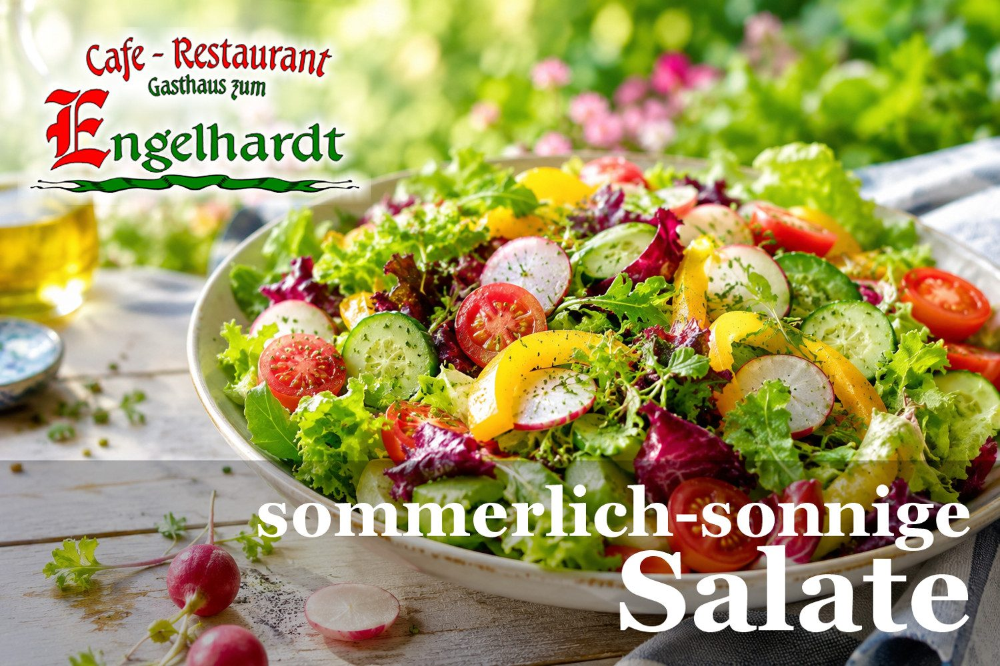

Kein Ruhetag.Ab 8 Uhr für dich da.
Frühstück, Tagesmenü, große Karte bis 22 Uhr und ein schattiger Gastgarten am Hauptplatz von Fohnsdorf. Robert Engelhardt und sein Team kochen frisch, steirisch und für jedermann.
- Gastgarten & Terrasse
- Kinderspielecke
- Behindertengerecht
- Seminarraum
- Extrazimmer
- Zigarrenangebot
- Bankomat & Kreditkarte

Ab 08:00 Uhr geöffnet
Täglich ab acht Uhr früh — herzhaftes „Engelhardt-Frühstück“ inklusive. Und ja, du hast richtig gelesen: bei uns gibt es keinen Ruhetag.
Jeden Tag ein neues Menü
Tagesmenü € 13,90, kleines Menü € 12,50, täglich von 11:00 bis 14:00 Uhr. Die Menüs der kommenden sieben Tage findest du in der Wochenvorschau.
Nr. 1 in Fohnsdorf
Auf Restaurant Guru mit 4,4 von 5 aus 522 Bewertungen bewertet — Platz 1 von 37 Lokalen in Fohnsdorf.
Wo man das Zeichen des „Steirischen Dorfwirtes“ sieht
…ist man als Gast herzlich willkommen und lernt Speisen und Getränke der Region kennen — aber auch die Atmosphäre des Ortes und seiner Bewohner. So auch im Cafe-Restaurant Engelhardt.
Wir kümmern uns mit Leib und Seele um das Wohlbefinden unserer Gäste. Lass dich von unserem Team kulinarisch verwöhnen, plane deine Firmen- oder Familienfeier gemeinsam mit uns oder richte dein Seminar in unseren Räumlichkeiten aus — wir sind gerne behilflich. Auch als Catering-Partner stehen wir zur Verfügung.
Wir g’frein uns auf eich!
Öffnungs- und Küchenzeiten
- Lokal, täglichab 08:00 Uhr „bis müde“
- Frühstückskarte08:00 – 10:30 Uhr
- Große Karte11:00 – 14:00 Uhr
- Tagesmenü11:00 – 14:00 Uhr
- Kleine Karte14:00 – 18:00 Uhr
- Große Karte18:00 – 22:00 Uhr
- Ruhetagkeiner
Reservierung und Vorbestellung: +43 3573 4880 — auch per WhatsApp.
Gerade richtig für die Hitze
Wenn die Temperatur am Thermometer nach oben klettert, ist es höchste Zeit für einen Platz in unserem herrlichen schattigen Gastgarten. Bei kühlen Getränken und sonnig-sommerlichen Salaten lässt sich die Hitze viel besser aushalten. Also — wann kommst du?
Lady Salat
Frischer Salatteller mit gegrillten Beiriedstreifen vom steirischen Almrind, dazu Sour Cream.
€ 19,90
Vogerlsalat mit Backhendl
In Kräuterjoghurt eingelegtes, ausgelöstes Backhendl auf Vogerl-Erdäpfelsalat — nach Omas Rezept.
€ 18,80
Steirischer Vogerlsalat
Dazu Speck-Kartoffelscheibchen mit Knoblauch und Kürbiskernöl.
€ 9,90
Hol dir dein Essen bei uns ab
Obwohl wir wieder täglich für unsere Gäste geöffnet haben, bieten wir den Abholservice weiterhin an. Einfach dein Wunschmenü aus der Speisekarte auswählen, per Telefon oder WhatsApp bestellen und abholen.
- Abholzeiten11:00 – 14:00 Uhr
- Abholzeiten18:00 – 22:00 Uhr
Die Abhol-Speisekarte hängt auch im Schaukasten vor dem Lokal und läuft im TV-Infokanal Fohnsdorf. Kulinarische Sonderwünsche gerne auf Bestellung.
„Cafe & Genuss Engelhardt“
Unser zweites Haus: Seit Donnerstag, dem 07. 05. 2026 ist das Kaffeehaus „Cafe & Genuss Engelhardt“ in Judenburg offiziell eröffnet. Komm vorbei und überzeug dich von unserem Angebot an Getränken und Snacks gegen den kleinen Hunger.
Gutscheine sind in beiden Häusern erhältlich — hier bestellen.
Freizeit vor der Haustür
Freizeitmöglichkeiten gibt es hier jede Menge — alles in einem Umkreis von wenigen Kilometern.
Red Bull Ring Spielberg
Motorsport im Murtal, wenige Minuten entfernt.
AirPower-Flugshow
Die Flugshow am Fliegerhorst Zeltweg.
Therme Aqualux
Erlebnistherme direkt in Fohnsdorf.
Bergbaumuseum Fohnsdorf
Die Bergbaugeschichte des Ortes.
Ruine Fohnsdorf
Der Blick über den Ort.
Sternenturm Judenburg
Sternwarte im Stadtturm Judenburg.
Tisch sichern, Menü vorbestellen oder abholen.
Wir sind während der Öffnungszeiten telefonisch und per WhatsApp erreichbar: +43 3573 4880.